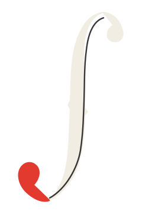

上下終端のバランスと太い下側カーブを正式ロゴへ採用。
FORMAL MARK REFINEMENT
06を、正式ロゴの
新しい基準へ。
02は比較参照、10は小型アイコン候補として保持し、06を白背景・黒背景・ロゴタイプ・名刺・サイトヘッダーへ展開します。
01 / SELECTION
採用基準と保持候補
細さと軽さの比較参照として保持。
16px用の角張った小型アイコン候補。
02 / REDUCTION TEST
64 / 32 / 16px
06 / FORMAL
10 / SMALL
03 / COLOR
白背景／黒背景

04 / APPLICATIONS
名刺表面とサイトヘッダー
BUSINESS CARD / 91 × 55mm
SYSTEM / SOUND
AI SOLUTION ENGINEER
業務改善・AI導入・自動化支援
NAME / CONTACT / QR — PLACEHOLDER業務改善・AI導入・自動化支援
SITE HEADER / MOBILE
AI SOLUTION ENGINEER仕事の中にある
「毎回面倒」を改善します。
「毎回面倒」を改善します。